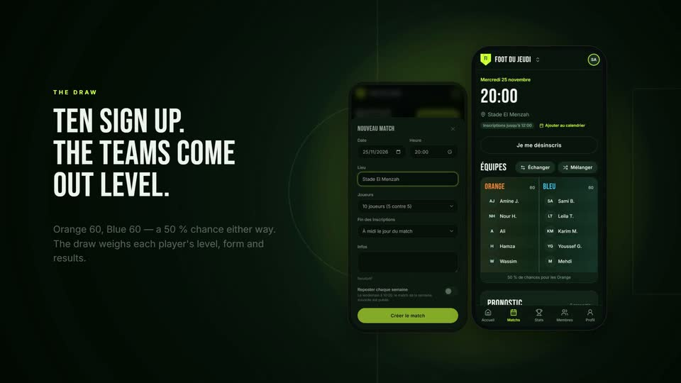
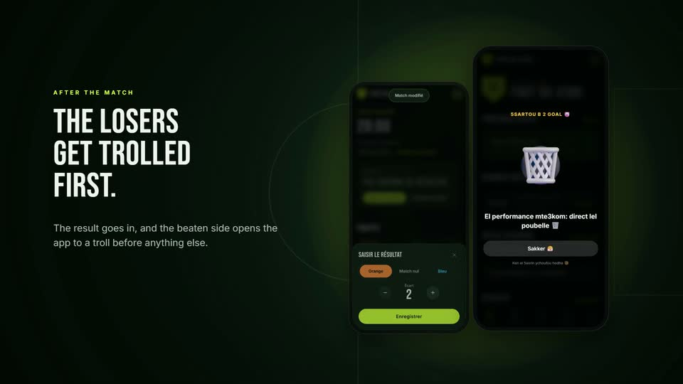
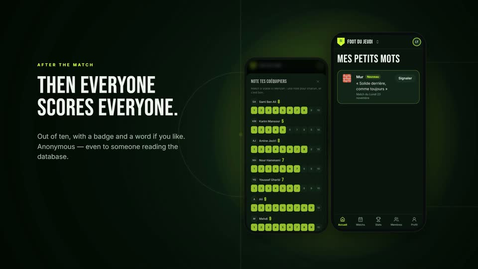
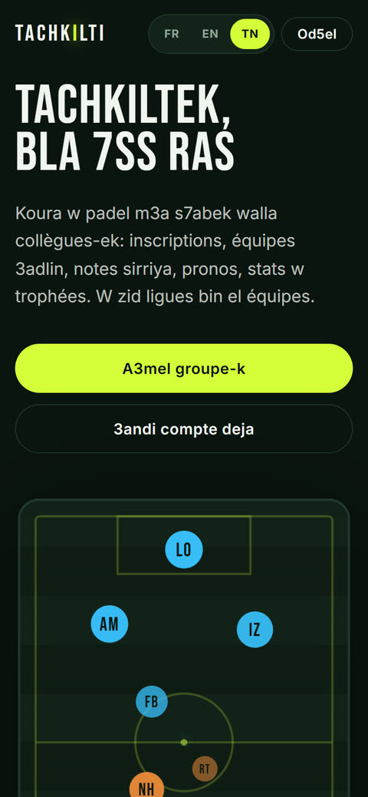
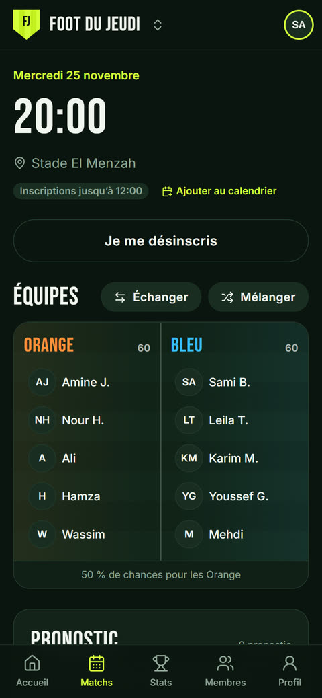
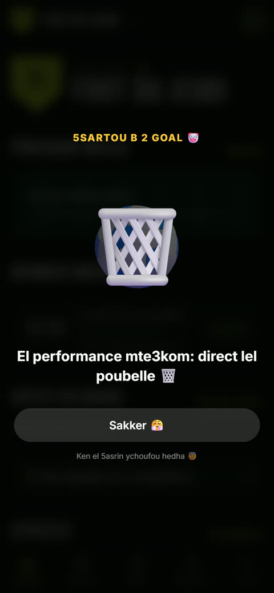
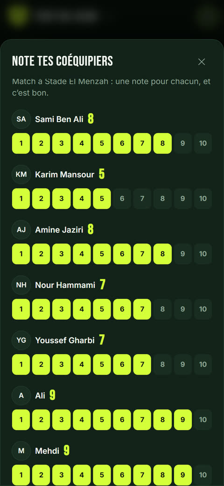
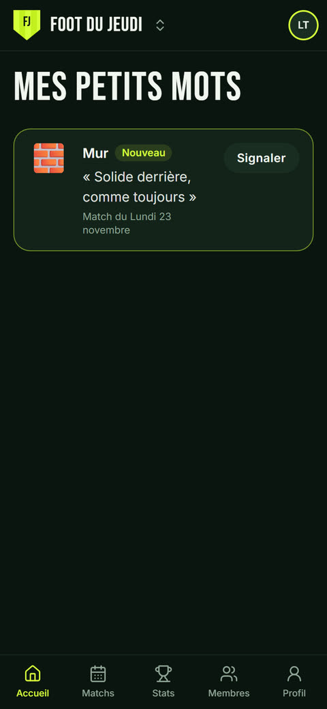

Tachkilti
Football and padel for groups of friends: sign-ups from the phone, teams drawn level, and anonymous scores nobody can trace — not even the platform owner.
Overview
Football and padel for groups of friends and colleagues, live at tachkilti.vercel.app in French, English and Tounsi — Tunisian Arabic written in Latin letters. Players sign up for a match from their phones, and once it is full the teams are drawn level on each player's level, form and results; a dropout holds the lineup and a return restores it. After the match the result goes in, the beaten side opens the app to a troll, and everyone scores everyone out of ten. Who scored whom is stored only as an HMAC keyed by a secret the database never holds, and notes and player ratings are sealed with AES-256-GCM, so not even the platform owner can say who gave what. Around it: seasons, stats and trophies; padel with pairs balanced on level and court side, Americano and Mexicano sessions, and the court cost split between the players; leagues and cups whose match sheets both captains confirm, validated on their own after 48 hours. Nuxt 4 over Drizzle and PostgreSQL: 137 API routes and 132 test files.
Problem and objectives
Organising a weekly match among friends runs on group chats: who is in, who drops out, who plays on which side. Tachkilti turns that into an app, and adds the part a group chat cannot do honestly — players scoring each other without anyone knowing who gave what.
- Sign-ups from the phone, with teams drawn level once a match is full
- Anonymous scores and notes after every match, anonymous even to someone reading the database
- Leagues, cups and padel on the same accounts, in French, English and Tounsi
Architecture
Phone
Nuxt 4 · Vue 3 · PWA
The installable app: French, English and Tounsi, the language chosen on the server for the first paint.
- Phone Nuxt 4 · Vue 3 · PWA — The installable app: French, English and Tounsi, the language chosen on the server for the first paint.
- Server API Nuxt server · 137 routes — Accounts, groups, matches, padel and competitions behind 137 API routes, with rate limits per action.
- Domain services draw · ratings · competitions — The balanced draw, the post-match flow, standings with head-to-head, and the 48-hour auto-validation of match sheets.
- Anonymity vault HMAC-SHA256 · AES-256-GCM — Every "who" column is a keyed hash; notes and player ratings are sealed. The key never enters the database.
- PostgreSQL Drizzle ORM · Neon — The data, migrated at build time; it holds hashes and sealed blobs, never who rated whom.
- Push and mail Web Push · SMTP or Resend — Match reminders and results to the phone; sign-up and reset links by mail.
- PRIVACY_KEY environment only — The one secret every vault key is derived from. It can never be rotated once ratings exist.
Engineering challenges and decisions
- Who scored whom kept only as an HMAC keyed by a secret the database never holds
- Notes and player ratings sealed with AES-256-GCM; a player finds their own by recomputing the hash
- Balanced draw on level, form and results; a dropout holds the lineup, a return restores it
- Match sheets confirmed by both captains, auto-validated after 48 hours; head-to-head standings
Nobody knows who
- The constraint
- After every match, players score each other out of ten and can leave a note. The scores are only honest if nobody — organiser, platform owner, anyone holding the database — can see who gave what.
- What I rejected
- Storing the rater and hiding the column.
- What I did
- Every "who" column — rater, note sender, poll voter — holds only an HMAC keyed by a secret that never enters the database; notes and player ratings are also sealed with AES-256-GCM. A player finds their own ratings by recomputing the hash.
- What it cost
- The secret can never be rotated once ratings exist, and a moderator can hide a reported note but never learn who wrote it.
Technologies
Also in use: Neon, Web Push, Vercel.
My contribution
Solo build — product, front end, API, data model, tests and deployment. I am the only committer on the repository.
Screens
Stills from the demo film, then screens captured from the running app.








Results
- Live
- at tachkilti.vercel.app
- 137
- API routes
- 132
- test files, unit to Playwright end-to-end
- 3
- locales: French, English, Tounsi